Anyone can build the game in their head — with AI as a teammate at every step.
So, Wanaka. Wanaka is an AI game studio. I joined when it was three people, as the founding designer, and we're thirty now. The idea is simple: helping people build games with AI.
User problem
Everyone has a game in their head. Three walls keep it there.
Making a game takes three crafts most people never learned.
“I can’t code. How does a rule in my head become something I can actually play?”
Code
“I don’t know how to draw or build 3D models at all.”
Art
“I can see the game… but not the rules, the levels, how it all hangs together.”
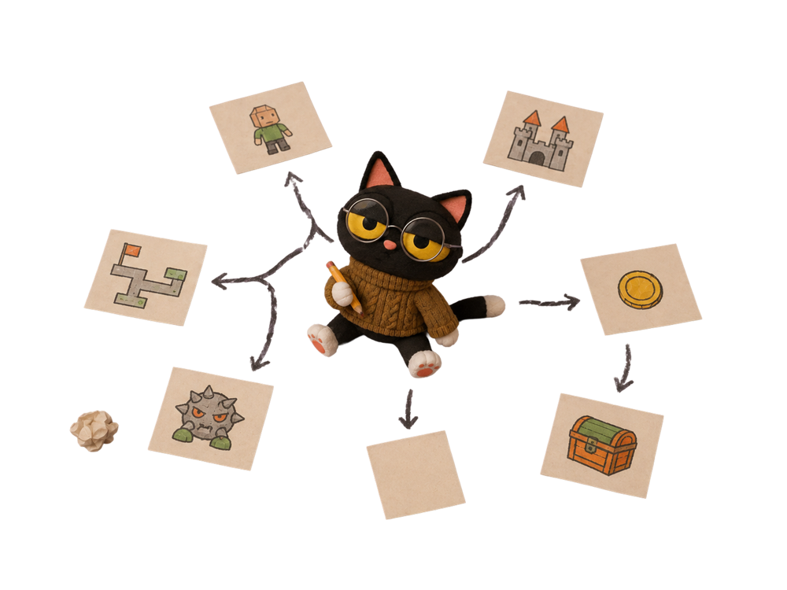
Game plan
The idea stays an idea.
And the reason that matters is that everyone has a game in their head — but there are three walls that keep it there. [space]The first is "I can't code."[space]The second is "I can't draw."[space]And the third is "I can see the game, but I can't see the rules, the levels, how it all hangs together." So that's code, art and game design — three crafts most people never learned. Which is why the idea just stays an idea.
The mission
Everyone can make a game.
People do the part they love and are good at. AI does the part it does best.
YoursImagine freelySnap models together like building blocksBuild the world
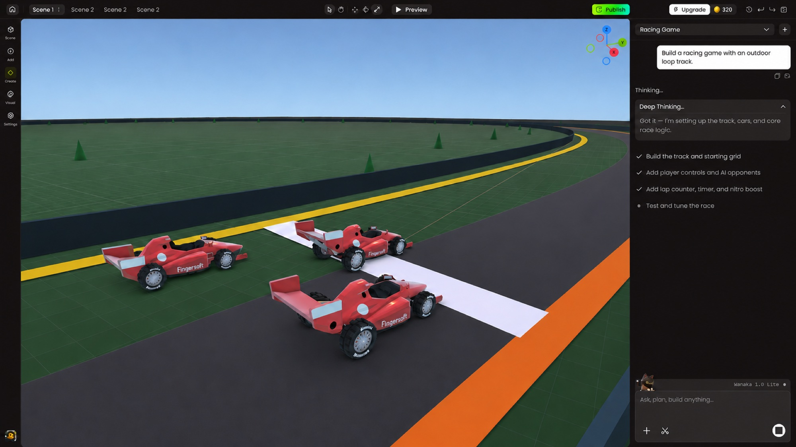
The crew'sAI writes the codeAI creates the assetsAI helps plan the game
Creativity stays human. Craft goes to AI.
So our mission is that everyone can make a game. And the rule behind every product decision we make is pretty simple: people do the part they love and are good at, and AI does the part it does best. [hover left]On the human side, that's imagining, snapping models together like blocks, building the world.[hover right]On the AI side, it's writing the code, creating the assets, and helping plan the game. So creativity stays human, and the craft goes to AI.
Wall 01 · “I can’t code”
No code. Just tell the AI what the game should do.
Where we started: panels over the canvas, a toolbar of everything, a dated look.
Say it in chat, watch the plan tick off. Tools by frequency, click to locate, canvas first.
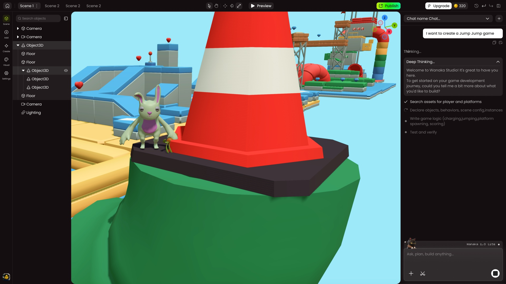
After
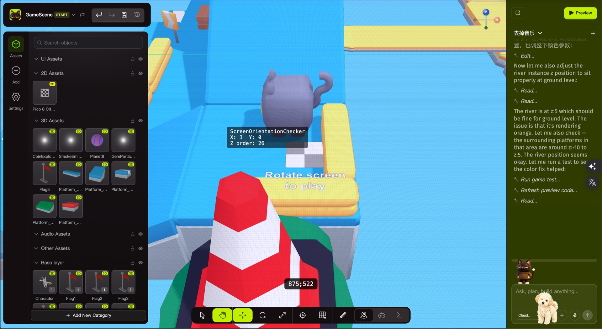
Before
<>
Let me take the walls one by one. Wall one is "I can't code," and this is where we started. [hover the orange dots] In the first version, we had panels sitting on top of the canvas, a toolbar with everything in it, and logs instead of a conversation. So the game scene was mostly covered up, and honestly, it didn't look great either. [space]
So in the redesign, users just say what they want in chat and watch the plan tick off. [hover the green dots]The left side is where you edit, and on the right, the AI tells you where it's at and what to do next. The game scene is completely uncovered, the whole thing is simpler and cleaner, and it gives users a real sense of control.
Wall 02 · “I can’t draw” · PC
Assets you can make, not hunt for.
Two places to generate. A standalone Character Factory: describe it, get a rigged, animated 3D model. And inside the Studio, where assets are generated and placed without leaving the canvas.
Character Factory · standalone generatorIn the Studio · generate and place, no round trip Not live yet · working demo built with Claude Code
Wall 02 · “I can’t draw” · Mobile
Photograph it. It’s in your game.
The companion app keeps it playful and light: snap a photo, and it becomes a game prop that walks straight into your world on PC.
Companion app · photo → propCompanion app · a scene built in minutes
Wall two is "I can't draw." On PC there are two places to generate assets. [hover] One is a Character Factory — you describe it, and you get a rigged, animated 3D model. The other is inside the Studio itself, so assets get generated and placed without ever leaving the canvas — that one's not live yet, it's a working demo I built with Claude Code. [space]
And on mobile we kept it lighter and more playful: you take a photo of anything, and it becomes a 3D game asset you can drop straight into your game.
Wall 03 · “Worlds are complicated”
Plan mode: a producer runs the project with you.
01
Open Plan mode
YouOne sentence: what you want to make.
02
Planner drafts the plan
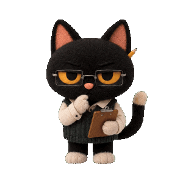
Levels, systems, pacing — in seconds.
03
Confirm with a few taps
YouPick options, tweak, approve.
04
The crew takes the parts
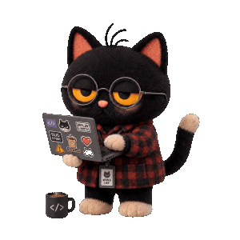
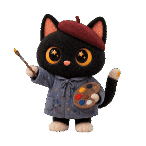
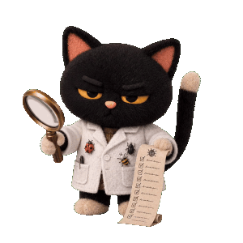
Developer, Artist, Tester, Musician — one piece each.
05
1.0 lands, you give feedback
The right cat revises until it feels right.
06
Planner proposes 2.0
Next steps, one version at a time.
Still in planning · working demo built with Claude Code
Wall three is game design — what to build, in what order, and why. So this agent is a producer. [hover the steps]You open Plan mode with one sentence, and the Planner drafts a plan in seconds. You confirm it with a few taps, and then the crew takes the parts — developer, artist, tester, musician. After version one lands, you give feedback, the right cat goes and revises it, and then the Planner proposes version two. This one's still in planning, but the flow you see on the right is a working demo I built with Claude Code to share the flow with the team.
The AI workflow
How I work with AI, day to day.
Direction → feasibility → execution → QA → back into the system. AI is in every step; the judgment stays mine.
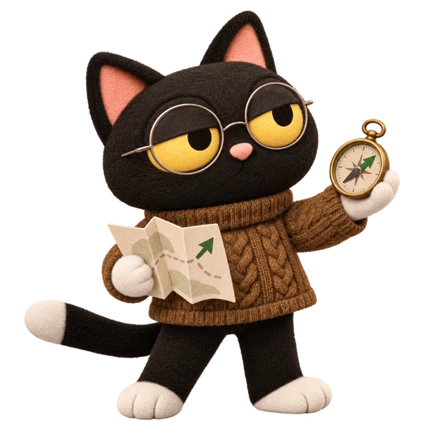
01Set direction
Research with AI. Daily market agents feed the team.
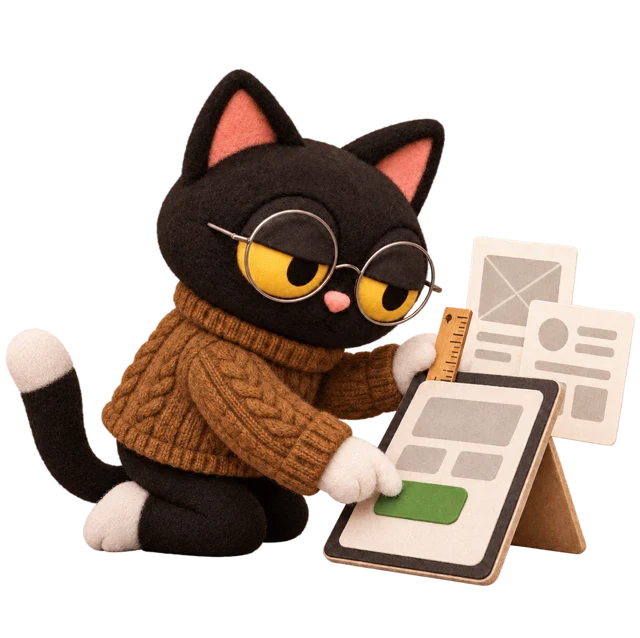
02Test feasibility
Claude Code + Figma on our design system. Real pages before we commit.
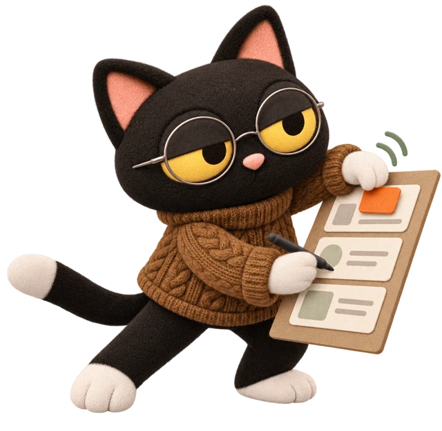
03Execute
Key pages by hand. AI drafts edge cases, motion and assets.
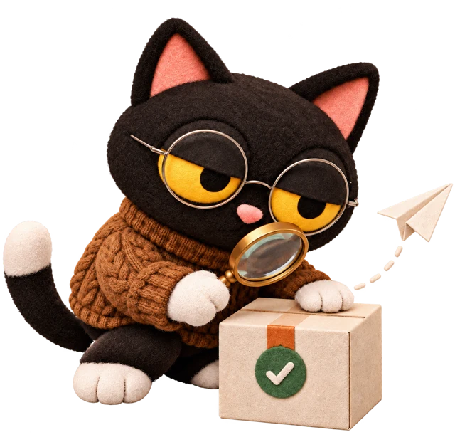
04Ship & QA
Real demos on GitHub. A Design-QA skill before review.
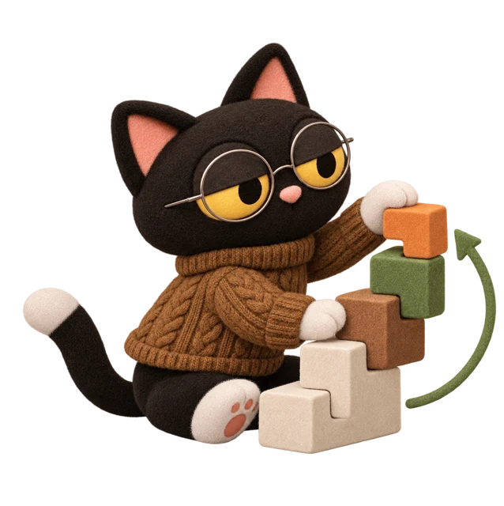
05Compound
Good components go back into the system. Skills keep quality stable.
If I zoom out, this is how I work with AI day to day. It's not a fixed process — we all know AI is changing day to day — but right now, these are the stages where AI helps me design faster and better. [hover a step] So AI is in every step — but the judgment, the taste and the design details stay mine.
Setting direction: AI helps me with research, and a few market agents send me the new stuff I want to keep up with, every day.
When I design, I use Claude Code and Figma with our design system to build real front-end pages, before we commit to anything.
When I execute, I do the key pages by hand, and AI drafts the edge cases, the motion and the assets.
I ship real demos on GitHub, and there's a design-QA skill the engineers run before review.
And then it compounds: good components go back into the system, and written skills keep the generation quality stable.
Status
50,000 signed up — before the doors even opened.
50,000+
creators registered — during closed beta
3 → 30
team size since I joined
1 yr
from first prototype to a working studio
Made by a creator · RacingMade by a creator · Cat ChaosMade by a creator · Shooter
Wanaka is still in closed beta, and we already have fifty thousand creators signed up. The team went from three to thirty, and it took about a year from the first prototype to a working studio. And these are games that creators actually made.
Closing
AI gives designers their boldness back.
Ideas stop waiting. Try it, feel it, decide — in seconds, not sprints.
The craft moves up: I own the decisions, the details and the specs — and I design how AI and I work together.
This project was really about bringing AI into the workflow, and what I genuinely felt is that AI makes designers braver — more willing to try things and to innovate. Our ideas don't have to wait anymore. We can try it, feel it, and decide, in seconds instead of a long process.